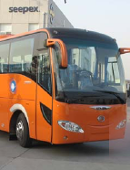

击破
打破传统模式
打破传统模式
城运
通勤出行专家
通勤出行专家
便捷
车辆位置跟踪
车辆位置跟踪
舒适
保证一人一座
保证一人一座
江城巴士，是由武汉市光大通勤汽车服有限公司全力打造推出的一款互联网巴士出行服务平台。我们通过与武汉市优质的巴士运输公司形成战略合作，利用先进的移动互联网技术，为广大客户提供多场景的巴士出行服务，能够完美的解决用车方和供车方之间的消息不对等、位置不明确、订车不方便、支付不便捷、乘坐不舒适的各项难题，充分满足武汉市企业及个人的用车需求，我们的服务将全面涵盖通勤班车、地铁机场接驳、商务会议、节假日出游、迎婚嫁娶及其他定制化出行的用车范围，为您的出行生活提供最便捷的通道。
用户可以通过江城巴士官方微信发起用车申请，我们将会让您享受到一人一座、安全舒适的巴士服务。江城巴士，您身边的大巴出行定制专家！
江城巴士系统根据服务厂商车辆线路的不同，设置专区，访问权限独立，轻松管理班车运营。
一键收藏常用线路，后期使用更方便；针对个人喜好，在线提前选座。
让传统的方式退休，告别望眼欲穿的“傻等时代”。车辆行驶方向，途径站点一目了然。
江城巴士系统基于微信端口开发，添加微信公众号，即可预约大巴，无需下载。